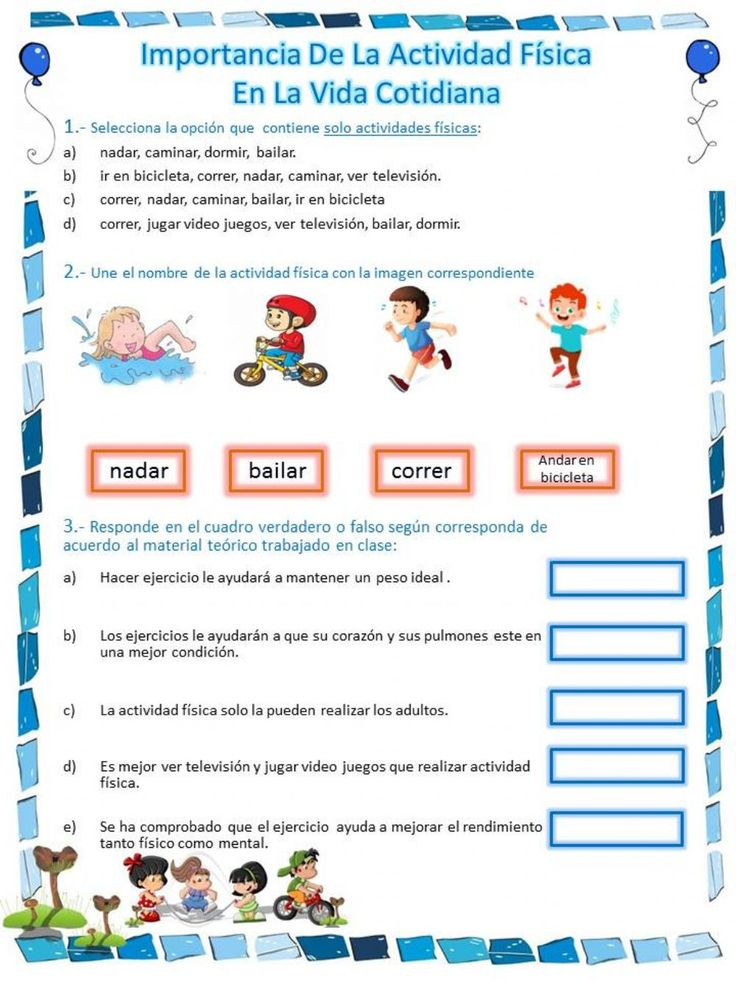
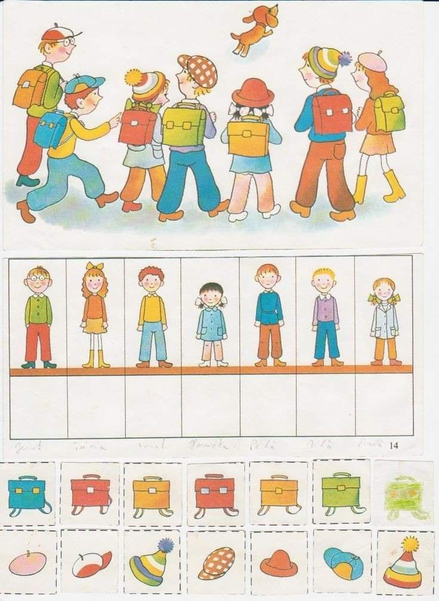
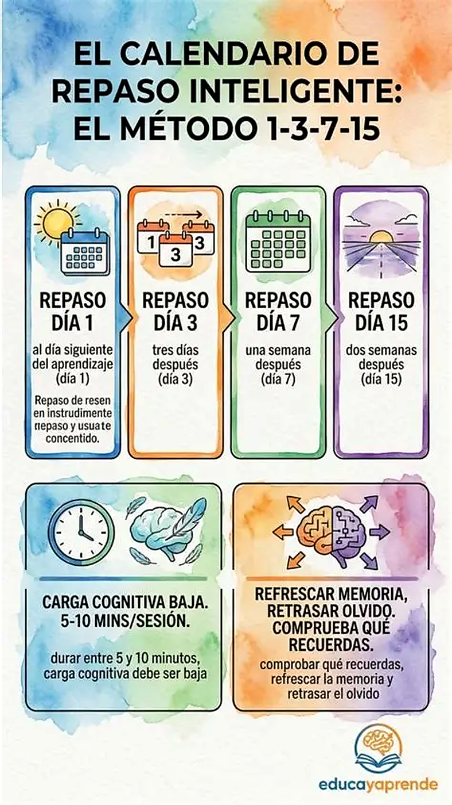
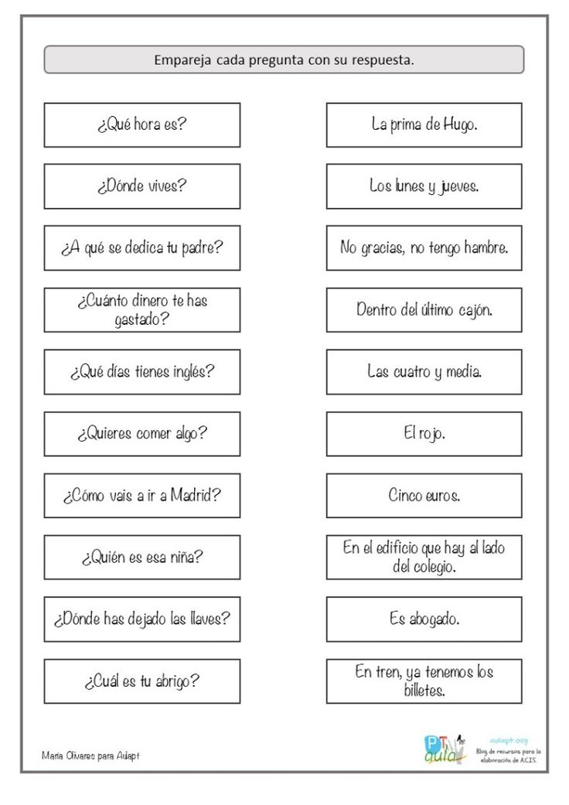
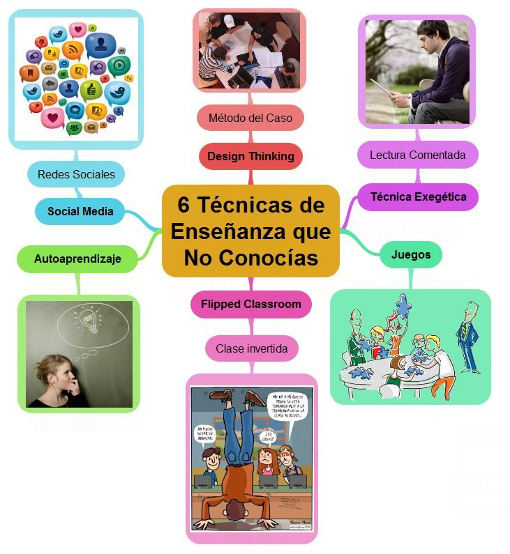
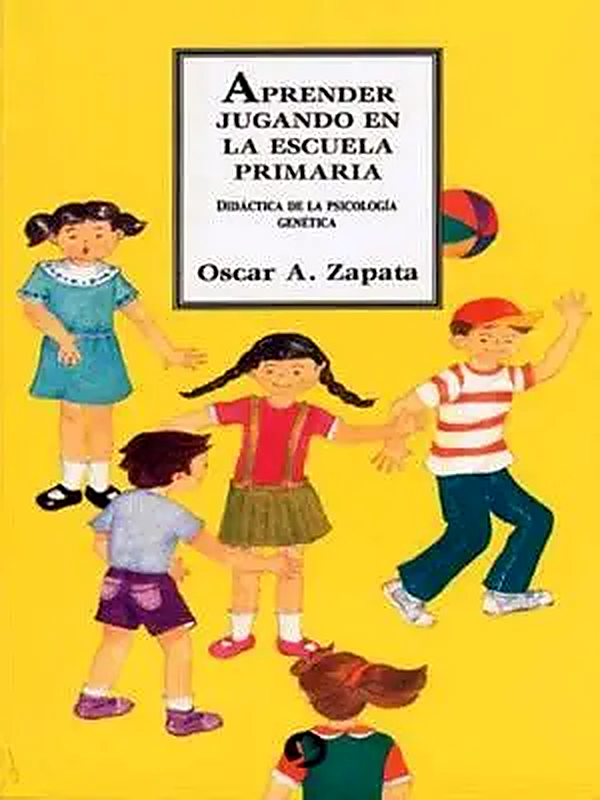

Explora las actividades y fotografías de este nivel.
TÉCNICA 01
Relación con la vida cotidiana: Buscar ejemplos de lo aprendido en casa o en el barrio para entenderlo más fácilmente.

TÉCNICA 02
Juego de asociación visual: Pegar dibujos o símbolos en cada tema para recordar de inmediato de qué se trata.

TÉCNICA 03
Horario de repaso espaciado: Repasar el tema el mismo día, a los 3 días y a la semana siguiente para no olvidarlo

TÉCNICA 04
Preguntas y respuestas: Hacer pequeñas preguntas sobre el tema para comprobar cuánto se aprendió.

TÉCNICA 05
Técnica de enseñar: Explicar lo aprendido a los padres, hermanos o compañeros

TÉCNICA 06
Aprender jugando: Utilizar juegos, rompecabezas, dados y material didáctico para aprender
